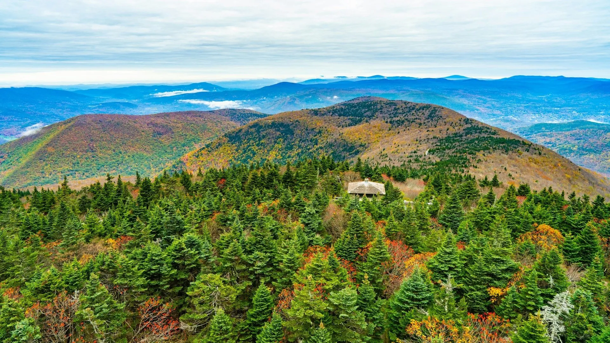

How It Works

DeepRoot Carbon enables landowners to earn predictable income by making
multi-year pledges to maintain forest cover and soil health. We quantify
ongoing carbon storage and sequestration and issue stewardship-based
credits that support real, local climate action.
For Landowners
- Simple onboarding and eligibility review
- Carbon baseline and stewardship assessment
- Multi-year forest pledge contract
- Ongoing monitoring and verification
- Payments tied to verified credits
For Businesses
- High-integrity, transparent local credits
- Clear annual impact reporting
- Subscription or one-time purchase options
Stewardship Credits

DeepRoot Carbon credits represent verified carbon stewardship over time.
Our methodology emphasizes durability, conservative accounting, and
local accountability rather than short-term offsets.
Credit Types
- Carbon Storage: standing forest carbon maintained under pledge
- Sequestration: measured annual carbon gains where applicable
Integrity Principles
- Conservative assumptions and buffer pools
- Clear additionality and risk screening
- Remote sensing with periodic field verification
- Project-level transparency and documentation
About DeepRoot

DeepRoot Carbon was created to address a simple problem: most carbon markets
are opaque, distant, and difficult to trust. We focus on forests and soils
where long-term stewardship can be verified, understood, and supported
by nearby communities.
Why Local Stewardship
- Greater trust through geographic proximity
- Co-benefits for biodiversity, water, and land continuity
- Shorter monitoring loops and clearer accountability
We manage assessment, contracting, monitoring, and credit sales so landowners
and buyers can focus on impact rather than complexity.
Get Started
Tell us a bit about yourself and we’ll follow up with next steps for a pilot.
Email us directly at
hello@deeprootcarbon.com